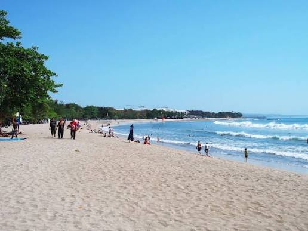
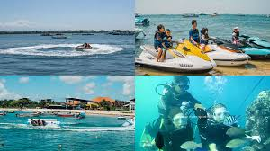
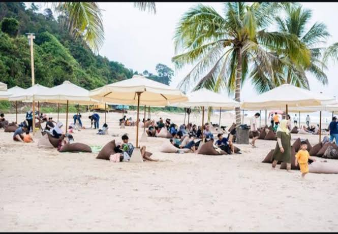
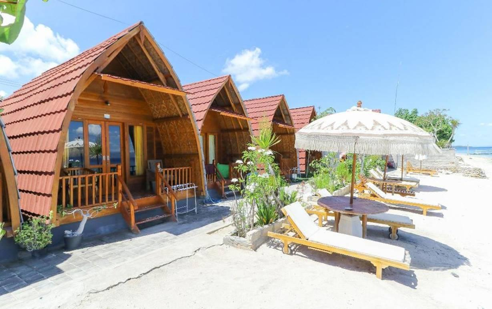
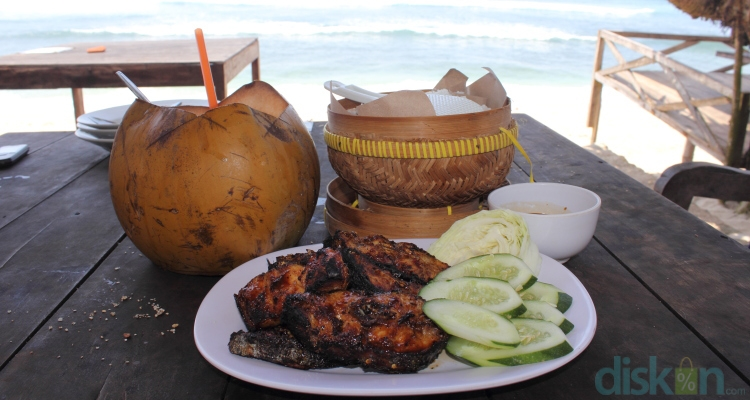

Wisata Pantai & Sunset
Keindahan sunset menjadi daya tarik utama bagi wisatawan yang mencari ketenangan di tepi pantai.
Pesona Pantai Alami dengan Keindahan Laut dan Wisata Bahari yang Memukau

Selamat datang di Desa Pasir Biru. Desa kami dianugerahi pesona alam pesisir yang luar biasa, mulai dari hamparan pasir putih, ombak laut yang menenangkan, hingga kekayaan bahari yang melimpah.
Kami dengan tangan terbuka mengundang Anda untuk datang berkunjung, menikmati keindahan alam kami, mencicipi lezatnya kuliner khas nelayan lokal, serta merasakan kehangatan dan keramahan masyarakat kami. Semoga setiap momen yang Anda habiskan di Desa Pasir Biru menjadi kenangan yang tak terlupakan.
— Kepala Desa Pasir BiruDesa Pasir Biru adalah desa wisata pesisir dengan potensi alam dan budaya yang menarik. Desa ini menawarkan keindahan pantai bersih, air jernih, dan pemandangan matahari terbenam yang ideal untuk wisata bahari. Selain itu, potensi kuliner hasil laut, kerajinan suvenir kerang, fasilitas penginapan, kafe, serta berbagai aktivitas air seperti snorkeling, jet ski, dan banana boat turut melengkapi pengalaman berkunjung. Berbagai potensi tersebut diharapkan mampu menjadikan Desa Pasir Biru sebagai destinasi wisata unggulan yang bermanfaat bagi masyarakat setempat dan berkesan bagi wisatawan.
Spot Wisata
UMKM Lokal
Pengunjung / Tahun

Keindahan sunset menjadi daya tarik utama bagi wisatawan yang mencari ketenangan di tepi pantai.

Ikan, udang, dan cumi segar tangkapan nelayan lokal yang menjadi primadona kuliner desa kami.

Nikmati snorkeling, jetski, dan berbagai wahana air menarik di ekosistem laut yang masih terjaga.

Nikmati suasana pantai yang tenang dengan pasir putih, ombak alami, dan pemandangan laut yang menenangkan.

Penginapan yang berada di kawasan pesisir, dengan akses langsung ke pantai dan lingkungan alami khas desa pantai.

Hidangan laut segar dari nelayan lokal, diolah dengan bumbu khas dan dinikmati langsung di tepi pantai.
"Pantainya sangat bersih dan tenang. Sunset di Desa Pasir Biru benar-benar magis. Sangat direkomendasikan!"
"Seafood bakar di sini paling enak dan segar yang pernah saya coba. Harganya juga sangat terjangkau."
0821-8582-8526
@desapasirbiru
Desa Pasir Biru, Kecamatan Waway, Kabupaten Lampung Selatan